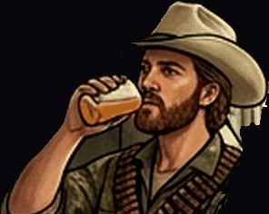

Hátra Lövés

« Surviving is striking from behind. »
Archer's Crude Shot.
- STR6
- DEX10
- INT5
- WIS7
- CHA6
- CON8
- Formula
- P(t) = ∫₀ᵗ e^(−λ(t−s)) · A(s) ds
- Appearance
- Ragged tribal rider, cowboy edge, precise, exact.
- Faction
- Grey · Divisionist · First Wave · 🎯 🐎 🏹 — Agility & Endurance · Reaction & Dexterity.
- Masks
- Black Knight · Saint Sebastian · Archer · Ulysses · Lovas Hátralövő · Baku Military Chief · Blonde Warrior Ruler.
- Profile
- Swift ambusher — a precise rider with grey arrow's edge. High DEX and CON track his ragged endurance.
- Powers
- Archer's Crude Shot, Oil Arrow, Fiery Pierce. Rider's Oil Slick — slick trap, slowing snare. His oil ignites arrows with lethal aim — piercing the wild's gut.
- Maskomatics
- Strength (XI) · Netzach · Mithraic Soldier · Plato's Laches gutsy strategy · Plotinus' oil jab pipeline snipe · Kabbalah's Archer in Nun might snipe new survival arcs.
- Hexagram
- 🏹 Hexagram 40 — Release (解) · "Thunder over water, Deliverance."
- Mini-stories
- Span of Flying Stitch Ups.
- Krewsmatics
- Arrow + Anchor = Exploration.
Puck You!: Plays banked shots off the side rails.
Puck You! : Joue par la bande.
PUCK YOU!© Korhogo™ · Korhogo Fauna™ · Fauna Masks™ — any content, any form, any medium. Mauk Tenieb.